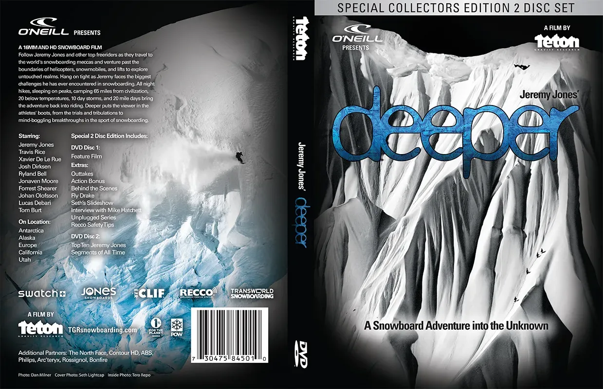

Teton Gravity Research · Campaigns
Jeremy Jones’ Deeper
Packaging, poster, ads and DVD menu for TGR's snowboard film Deeper.

- Client
- Teton Gravity Research
- Deliverables
- Packaging, Poster, Magazine ads, DVD menu, Marketing collateral
- Channels
- Print, Packaging, DVD
- AI used
- To come: AI use on this job
01
Challenge
Deeper is Teton Gravity Research's snowboard film with Jeremy Jones, the first in the Deeper, Further, Higher trilogy. The release needed the box, a poster, magazine ads, the DVD menu and the marketing pieces around them.
02
Approach
To come: approach copy
03
What we made
To come: what we made copy
04
Outcome
To come: outcome copy


Results. To come: real numbers or a client quote This band stays hidden on the live site until there is a real result.